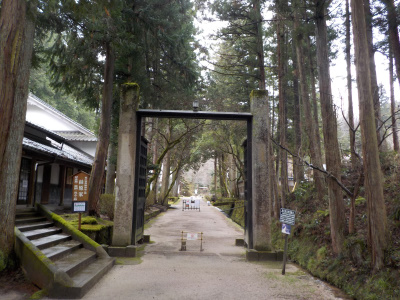
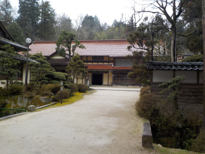
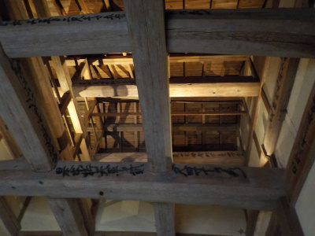
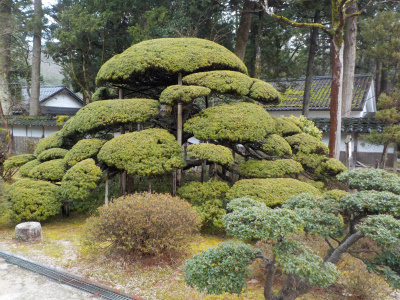
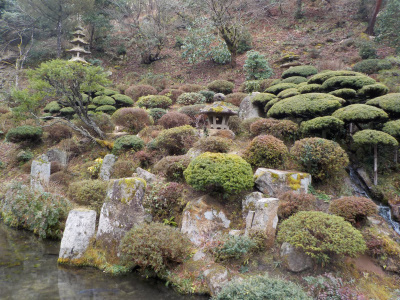
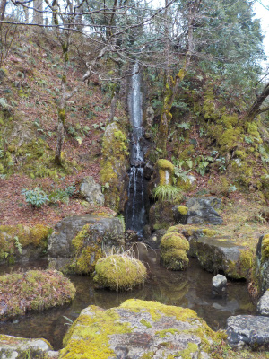

絲原記念館は立派でした。
2020/03/15

時代劇っぽい風景の入り口です。
雑誌等にベストショットが掲載されていますが、そのままの景色がありました。
本物だ。行ってみてがっかりの偽物じゃなかったです。
記念館は撮影禁止だったので写真は撮りませんでした。たたら関連は他の博物館等でよく見るので、特に興味なかったです。

国登録有形文化財の絲原家住宅です。

鉄師頭取の館の玄関です。
立派な梁です。文字が書かれていますが、何でしょうね？

お庭の木も歴史を感じさせる立派なものでした。
池には大きい鯉が多くいました。
ここだけとっても賑やかでした。

3月の庭園です。
小雨が降っていたので、とても落ち着いた雰囲気でした。
素晴らしかったです。

人口的な滝がありました。これはちょっといらないかなと思いました。
冬季のため林間散策路「洗心乃路」は見れませんでした。
普段と違う世界感があり、いい時間が過ごせました。